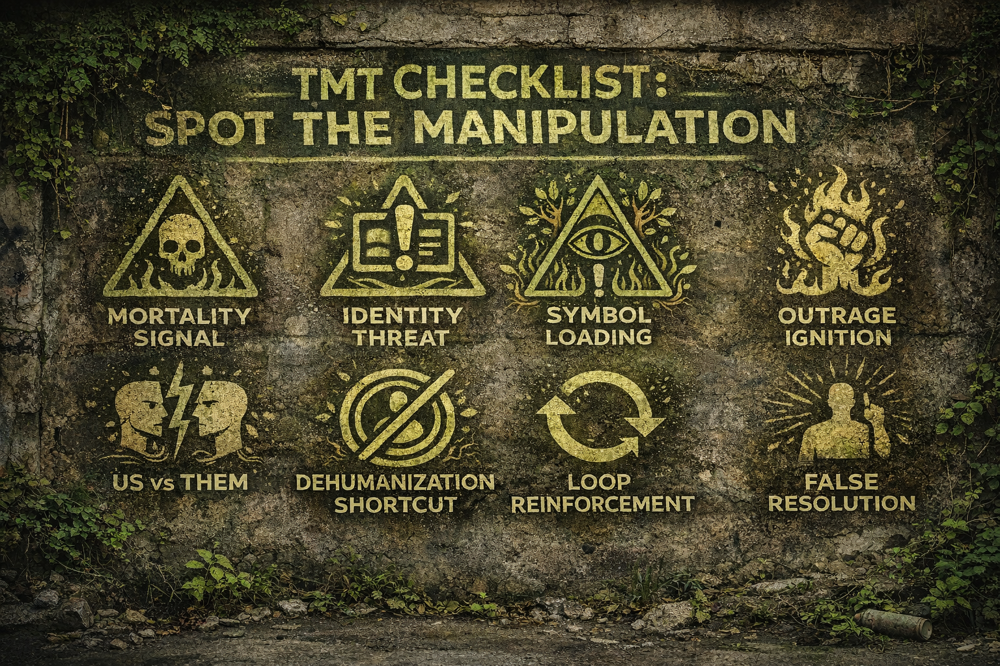

(Is fear of loss/death being quietly activated?)
Look for:
🧩 IPT Translation:
👉 Mortality isn’t stated… it’s implied
(Is your sense of self being poked?)
Look for:
🧩 IPT Translation:
👉 Not information… activation
(Is a person becoming a survival symbol?)
Look for:
🧩 IPT Translation:
👉 Human → Symbol → Shield
(Did your emotional temperature spike fast?)
Look for:
🧩 IPT Translation:
👉 Velocity over clarity
(Has the world been split clean in two?)
Look for:
🧩 IPT Translation:
👉 Complexity collapsed into enemy
(Are people reduced to labels?)
Look for:
🧩 IPT Translation:
👉 Easier to attack a label than a person
(Is the post feeding itself?)
Look for:
🧩 IPT Translation:
👉 Engagement = fuel
(Is a “solution” offered after activation?)
Look for:
🧩 IPT Translation:
👉 Fear created → identity offered
Run this like a mental checklist:
📡 Is fear being activated?
⚠️ Is identity being threatened?
👑 Is someone becoming a symbol?
🔥 Am I heating up fast?
🧨 Is this turning into “us vs them”?
🧱 Are people being simplified?
🔁 Is this looping emotionally?
🧭 Is a solution being pushed?
👉 If you hit 4+ of these…
you’re likely inside a TMT manipulation sequence
Don’t argue the content.
Interrupt the chain:
Most manipulation doesn’t say:
“Be afraid of death.”
It says:
“Something you are is under threat.”
And your system responds the same way.
“Is this informing me… or stabilizing me through fear?”
#IdentityPanicToolkit